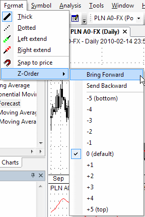

These options allow you to apply color or style to the objects. Note that you can also select the color and style of an object before drawing a new object: simply deselect any previous object (if any), change style selections, and draw a new object.
Thick
Changes the drawn object's formatting to a thick style.
Dotted
Changes the study's formatting to a dotted style.
Left Extend
Extends the trendline to the left.
Right Extend
Extends the trendline to the right.
Snap to price
Turns on the magnet that snaps the drawn studies to prices. The Snap to Price % Threshold can be set in the Preferences window. The Snap to Price % Threshold defines how far the price 'magnet' works. It will snap to a price when the mouse is nearer than the % threshold from the H/L/C price.